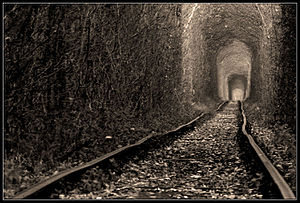
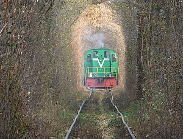
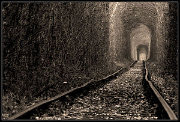
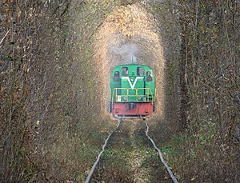
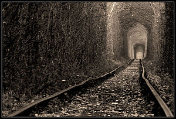
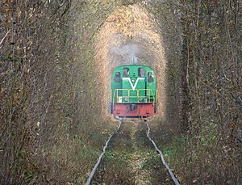

Gallary
 



Klevan, Rivne region
Unel Love is located on a section (about 4 km) of the railway line that leads from the village of Klevan to the village of Orzhiv. This is a green tunnel in the forest, formed by the movement of trains to / from the woodworking plant in Orzhev. On its way through the forest, the train knocks down branches of trees and bushes. As a result, a dense corridor of precise arched shape was formed. Therefore, this is not a miracle of nature, but a consequence of the man-made influence of the train [4] [5]
Thanks to successful marketing, the tunnel is a place of pilgrimage for tourists and lovers. There are a number of beliefs about the tunnel and its properties. Some of the newlyweds plant flowers here that symbolize their feelings.
In 2014, Japanese director Akiyoshi Imazaki shot the romantic drama "Pecking: The Tunnel of Love." The film premiered on November 23, 2014 at the Hanoi International Film Festival, and its all-Japanese premiere took place in 2015. The plot of the painting is directly related to the arched tunnel, popularly known as the "Tunnel of Love". [6] Short film "Mine". Mentioned in the movie "One Summer Night" (2019).
On May 20, 2017, a "Chinese analogue" of the love tunnel was opened in Hefei near China. [2] Tourists visit the Tunnel, as well as festive photo shoots of newlyweds are organized here. There are several love beliefs associated with this beautiful area. One of them - lovers should kiss at a time when the train passes through the tunnel and be sure to make a wish one for two [7].

